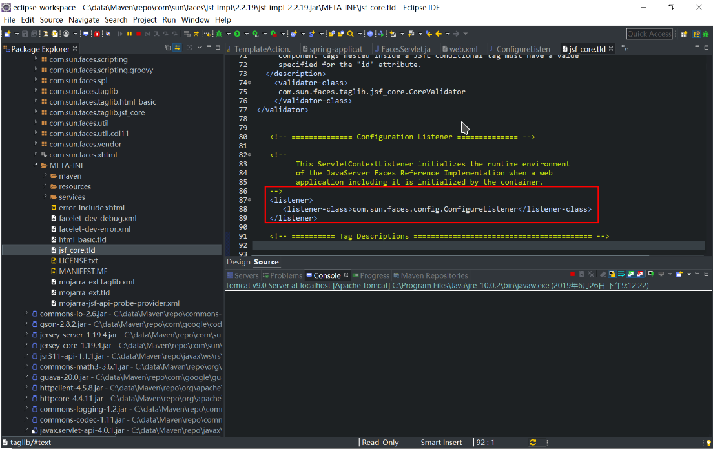
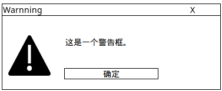

Java - JSF
Java - JSF
更新日期：2020-7-24
1. 整合JSF与Spring框架
JSF也有一套依赖注入的玩意儿。使用ManageredBean之类的注解来标记托管类，所谓整合就是希望能同时使用JSF和Spring的依赖注入，并能够互通。比如如下用法：
| public class TestAction {
@Autowired
TestForm testForm;
|
1.1 配置Spring
首先我们使用通常的做法来配置Spring。
Spring配置类:
1
2
3
4
5
6
7
8
9
10
11
12
13
14
15 | package org.hakurei.appconfig.spring;
import org.springframework.context.annotation.ComponentScan;
import org.springframework.context.annotation.Configuration;
/**
* Spring配置类
*/
@Configuration
// 自动扫描此package下面的注解类
@ComponentScan("org.hakurei")
public class SpringConfig {
/** 此处添加其它配置 */
}
|
这个配置类扫描org.hakurei包下面的注解类，加入到Spring的应用上下文中。
Web应用程序启动类:
1
2
3
4
5
6
7
8
9
10
11
12
13
14
15
16
17
18
19
20
21
22
23
24
25
26
27
28
29
30
31
32
33
34
35
36
37 | /**
* Web应用程序初始化
*/
public class SpringWebInit implements WebApplicationInitializer {
// 启动函数
public void onStartup(ServletContext servletContext) throws ServletException {
// log4j对象
Logger logger = LogManager.getLogger(SpringWebInit.class);
logger.error("Web应用程序初始化...");
logger.info("配置Spring应用上下文");
AnnotationConfigWebApplicationContext ctx = new AnnotationConfigWebApplicationContext();
logger.info("注册自己的Spring配置类:" + SpringConfig.class.getName());
ctx.register(SpringConfig.class);
logger.info("关联Servlet上下文");
ctx.setServletContext(servletContext);
logger.info("配置Listener: ContextLoaderListener, RequestContextListener");
servletContext.addListener(new ContextLoaderListener(ctx));
servletContext.addListener(new RequestContextListener());
// 配置dispatcher servlet
Dynamic dispatcher = servletContext.addServlet("dispatcher", new DispatcherServlet(ctx));
int loadOrder = 0;
dispatcher.addMapping("/");
dispatcher.setLoadOnStartup(loadOrder);
logger.info("配置dispatcher servlet");
logger.info("mapping: " + dispatcher.getMappings());
logger.info("Servlet加载顺序: " + loadOrder);
}
}
|
1.2 整合
使用JSF配置文件faces-config.xml:
1
2
3
4
5
6
7
8
9
10
11
12 | <?xml version="1.0" encoding="UTF-8"?>
<faces-config xmlns="http://java.sun.com/xml/ns/javaee"
xmlns:xsi="http://www.w3.org/2001/XMLSchema-instance"
xsi:schemaLocation="http://java.sun.com/xml/ns/javaee http://java.sun.com/xml/ns/javaee/web-facesconfig_2_1.xsd"
version="2.1">
<application>
<el-resolver>
org.springframework.web.jsf.el.SpringBeanFacesELResolver
</el-resolver>
</application>
</faces-config>
|
2. JSF的相关配置
2.1 配置Faces Servlet
Faces Servlet是JSF实现的一套Servlet。这个是JSF里面的概念，本身和PrimeFaces的Faces这个词没有关系。
Faces Servlet位于jsf-api-x.x.xx.jar中的javax.faces.webapp.FacesServlet。
此类是一个final类，我们无法继承。它在web.xml中的配置如下
| <servlet>
<servlet-name>Faces Servlet</servlet-name>
<servlet-class>javax.faces.webapp.FacesServlet</servlet-class>
<load-on-startup>1</load-on-startup>
</servlet>
<servlet-mapping>
<servlet-name>Faces Servlet</servlet-name>
<url-pattern>*.xhtml</url-pattern>
</servlet-mapping>
|
此处默认我们使用xhtml文件。
有的项目中还能看到如下配置，暂时没有发现这个配置是为了处理什么内容。
| <servlet-mapping>
<servlet-name>Faces Servlet</servlet-name>
<url-pattern>*.jsf</url-pattern>
</servlet-mapping>
|
在使用JSF的项目中，经常能在web.xml中见到如下配置:
| <listener>
<listener-class>com.sun.faces.config.ConfigureListener</listener-class>
</listener>
|
| /**
* <p>Parse all relevant JavaServer Faces configuration resources, and
* configure the Reference Implementation runtime environment.</p>
* <p/>
*/
public class ConfigureListener implements ServletRequestListener,
HttpSessionListener,
ServletRequestAttributeListener,
HttpSessionAttributeListener,
ServletContextAttributeListener,
ServletContextListener {
|
原来这个Listener用于初始化JSF的一些东西。一般会自动加载，并不需要我们在web里面配置。甚至有时候加上了会导致某些内容初始化两次。
而最初是由于GlassFish v3的一个bug导致这个Listener无法正常自动加载，所以需要手动配置，一般在使用tomcat时并不需要加。
建议如果不加的时候不报错就不要加。
如果查看jsf-impl-x.xx.xxx.jar里面的META-INF/jsf_core.tld文件会发现，这里面已经配置了这个Listener。

3. 搭建JSF+Primefaces项目
3.1 搭建JSF
3.1.1 下载Jsf库的Jar包
在Maven库中搜索如下三个Jar包并安装:
- servlet-api (javax.servlet/javax.servlet-api)
- jsf-api (com.sun.faces/jsf-api)
- jsf-impl (com.sun.faces/jsf-impl)
3.1.2 在web.xml中配置JSF
(1) 配置Servlet
在下添加如下配置:
1
2
3
4
5
6
7
8
9
10
11
12
13 | <servlet>
<servlet-name>Faces Servlet</servlet-name>
<servlet-class>javax.faces.webapp.FacesServlet</servlet-class>
<load-on-startup>1</load-on-startup>
</servlet>
<servlet-mapping>
<servlet-name>Faces Servlet</servlet-name>
<url-pattern>*.jsf</url-pattern>
</servlet-mapping>
<servlet-mapping>
<servlet-name>Faces Servlet</servlet-name>
<url-pattern>*.xhtml</url-pattern>
</servlet-mapping>
|
(2) 可选配置:Listener
| <listener>
<listener-class>com.sun.faces.config.ConfigureListener</listener-class>
|
※参考章节2.2 配置ConfigureListener.
3.1.3 在xhtml页面中使用jsf标签
在html头部加上如下声明:
| xmlns:h="http://java.sun.com/jsf/html"
xmlns:f="http://java.sun.com/jsf/core"
|
3.2 整合Primefaces
实际上使用Primefaces和使用Jstl标签库一样容易，只需要三步。
3.2.1 下载Primefaces的Jar包
在Maven库中搜索如下Jar包并安装:
- primefaces (org.primefaces/primefaces)
3.2.2 在xhtml页面中使用primefaces标签
在html头部加上如下声明:
| xmlns:p="http://primefaces.org/ui"
|
4. JSF项目MVC分层结构
MVC构架是指？
4.1 JSF中的MVC
在JSF中，使用Form类来存储业务数据，使用Action类来处理前台事件，使用xhtml来表现前台页面。对应的文档结构如下：
对于web工程来说
1
2
3
4
5
6
7
8
9
10
11
12
13
14
15
16
17
18 | learnJsf
├─src
| ├─main
| | ├─webapp
| | | ├─WEB-INF
| | | | ├─web.xml
| | | | ├─view
| | | | | ├─index.xhtml
| | | | | └login.xhtml
| | | | ├─lib
| | | ├─META-INF
| | ├─resources
| | ├─java
| | | ├─learn.model
| | | | ├─LoginForm.java
| | | | └UserInforEntity.java
| | | ├─learn.controller
| | | | └LoginAction.Java
|
4.2 各层直接的交互方式
Form类与前台页面xhtml显示的数据实时绑定。后台处理时可以直接从Form类中获取页面上用户输入的各种数据。
button可以指定为执行完Action后去update指定的组件，框架会默认通过ajax使用最新的数据来刷新此组件。如图中的search按钮执行完检索后用新存放在infors的数据来刷新searchRst这个dataTable。
button必须放在form元素中。否则它所绑定的action事件将不会生效。
在Action类中可以获取LoginForm对象，然后直接操作Form中的数据。
Form类只用来保存页面数据，并不应包含逻辑处理。
LoginForm.java
| @ManagedBean
@SessionScoped
private String userName; // get set
private String password; // get set
private String List<UserInforEntity> infors; // get set
private Boolean isShow; // get set
|
LoginAction.java
| @ManagedBean
@RequestScoped
public void login() {}
public void search() {}
|
login.xhtml
1
2
3
4
5
6
7
8
9
10
11
12
13
14
15 | <h:form>
<input text="用户名" value="#{loginForm.userName}" />
<password text="密码" value="#{loginForm.password}" />
<button action="#{loginAction.login()}" />
<button update="searchRst" action="#{loginAction.search()}" />
</h:form>
<p:dataTable id="searchRst"
value="#{loginForm.infors}"
var="infor">
<p:column value="#{infor.name}" />
<p:column value="#{infor.sex}" />
</p:dataTable>
|
5. 复合组件
5.1 什么是组件以及复合组件？
在HTML中页面中用<XX></XX>来表示的元素称之为组件。叫做component，常被叫做element。如<div />，<button />等都可以称之为组件。这样的组件我称之为HTML基本组件。
复合组件又可以叫自定义组件，是指由我们拼装HTML基本组件而产生的新的组件。
比如一个对话框组件

定义好了这样一个对话框组件后，我们就可以在需要弹警告框的地方插入这个组件，就像我们插入一个button一样简单。
| <p:commandButton value="执行" action="#{xxxAction.func1}" />
<z:warnningDlg msgStr="这里填警告框的内容" okAction="#{响应确定按钮的action}" isShow="#{xxxxForm.isShowWarnning}"/>
|
5.2 什么时候使用复合组件？
如果有这么一小组元素，你有很多页面都使用这组元素。就比如自己用DIV实现的对话框，你希望在别的页面也可以方便的使用他，那么就可以将这个对话框定义为一个复合组件。这样就不需要我们在每个页面都写一套对话框。
这里的使用场景要区别于模板，复合组件使用模板技术来定义，但应用范畴有所不同。我们通常在页面整体布局的时候会使用模板，可以方便的使所有页面的结构保持统一。复合组件不是从页面结构上，而是从页面上具体的一组一组元素上，来使各个页面保持统一。
5.3 定义一个复合组件
首先我们要先明确一下定义和引用的文档结构关系
以标准的Maven项目目录结构为例
1
2
3
4
5
6
7
8
9
10
11
12
13
14 | learnJsf
├─src
| ├─main
| | ├─resources
| | | ├─META-INF
| | | | ├─resources
| | | | | ├─view
| | | | | | ├─index.xhtml -- 在这个文件中使用这个组件
| | | | | | ├─template
| | | | | | ├─components
| | | | | | | └warnningDialog.xhtml -- 组件定义在这里
| | | | | ├─js
| | | | | ├─css
| | ├─java
|
(1) 组件定义语法
warnningDialog.xhtml
1
2
3
4
5
6
7
8
9
10
11
12
13
14
15
16
17
18
19
20
21
22 | xmlns:composite="http://java.sun.com/jsf/composite"
<!-- Interface -->
<composite:interface>
<composite:attribute name="msgStr" />
<composite:attribute name="okAction" method-signature="void action()" />
<composite:attribute name="isShow" />
</composite:interface>
<!-- Implementation -->
<composite:implementation>
<h:form>
<div id="warnningDialog" style="position:absolute;left:0;top:0;display:#{cc.attrs.isShow?block:none};">
<h:outputScript library="js" name="common.js" />
<div style="z-index:100;opacity:0.7;position:absolute;width:100vw;height:100vh;left:0;top:0;background-color:black;"></div>
<div style="z-index:200;position:absolute;width:50vw;height:50vh;left:25vw;top:25vh;background-color:white;">
This is a warnning dialog : #{cc.attrs.msgStr}
<p:commandButton value="確定" onclick="closeWarnningDialog()" action="#{cc.attrs.okAction}"/>
</div>
</div>
</h:form>
</composite:implementation>
|
cc.attrs是jsf组件的保留关键字。
(2) 在index.xhtml中使用这个复合组件
index.xhtml
| xmlns:z="http://java.sun.com/jsf/composite/view/components"
<z:warnningDialog msgStr="这里填警告框的内容" okAction="#{响应确定按钮的action}" isShow="#{xxxxForm.isShowWarnning}"/>
|